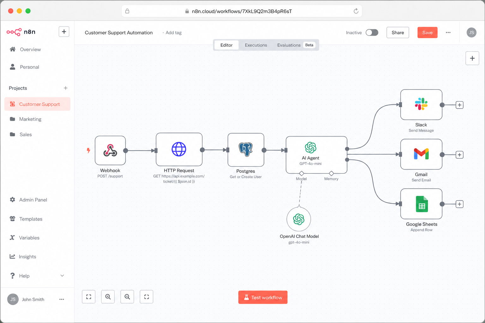

AI-Powered Automation with n8n
Self-hosted n8n workflows that wire together webhooks, REST APIs, databases, and LLMs to automate the busywork. I've built pipelines that ingest data, enrich it with an AI model, and route the results to Slack, email, and Sheets. They turn repetitive multi-step tasks into hands-off, event-driven automations that run 24/7.